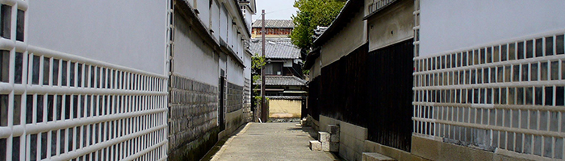
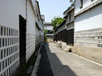
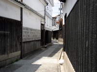
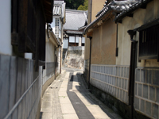
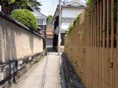
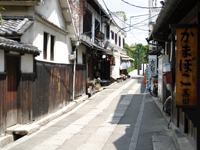
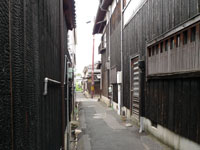
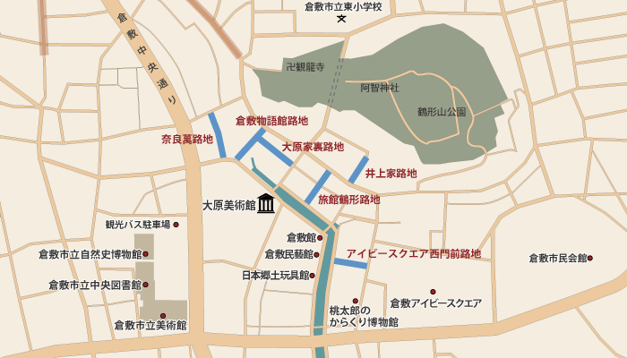

ALLEY路地

美観地区には路地が入り組むように存在しています。「ひやさい」と呼ばれ地元の人々に親しまれている路地は生活に密着し、住民の暮らしが色濃く感じられます。普段見ることの出来ない景観からは、また違った視点で歴史を感じる事が出来ます。また、大原家裏手の通りなどでは映画やドラマ、CMの撮影がよく行われています。
大原家裏路地

大原美術館を背にして、大原家と有隣荘の間の道を入り、左手に通るのがこの路地です。代表的な撮影スポットとして有名です。
奈良萬路地

倉敷物語館左手に通る路地は阿知商店街に続いています。美観地区路地の中でもこの路地が最も美しいといわれています。
井上家路地

井上家左手の路地でも撮影がよく行われています。奥には本栄寺があります。
倉敷物語館路地

倉敷物語館右手に通る路地は本通りへの抜け道としても多く利用されています。
アイビースクエア西門前路地

倉敷川からアイビースクエア西門に通る路地は、倉敷紡績の時代に物資を運ぶ道として利用されていました。
旅館鶴形路地

旅館鶴形とカモ井寿司の間を通る路地は本町へとつながります。

青く記している道が
観光スポットエリアです。
一覧に戻る